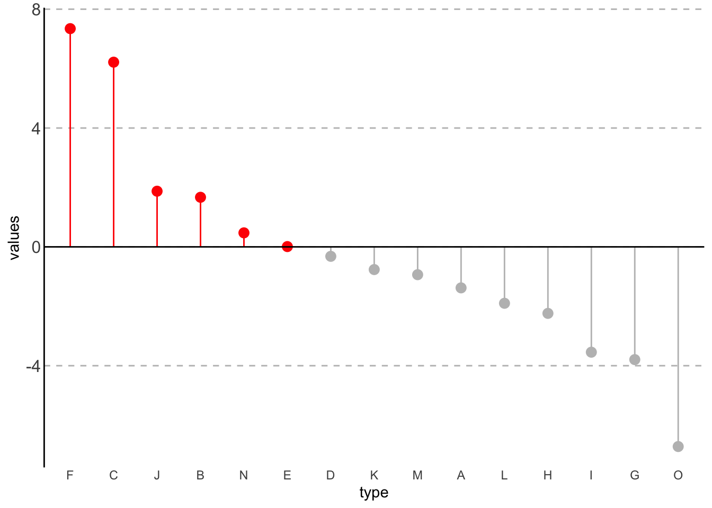
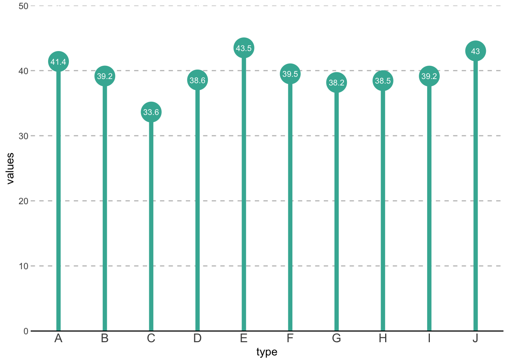
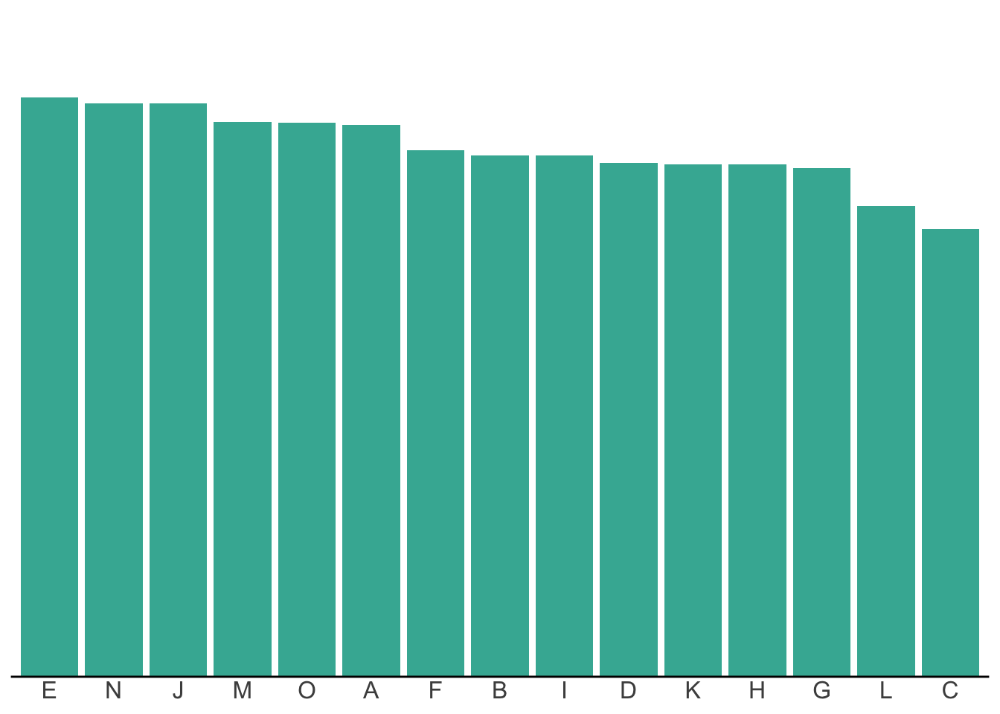
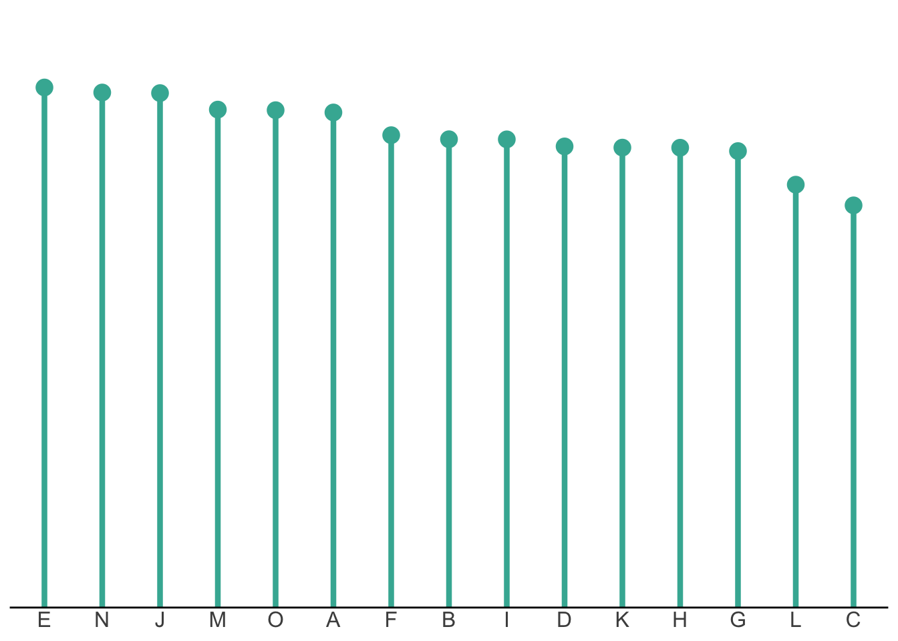
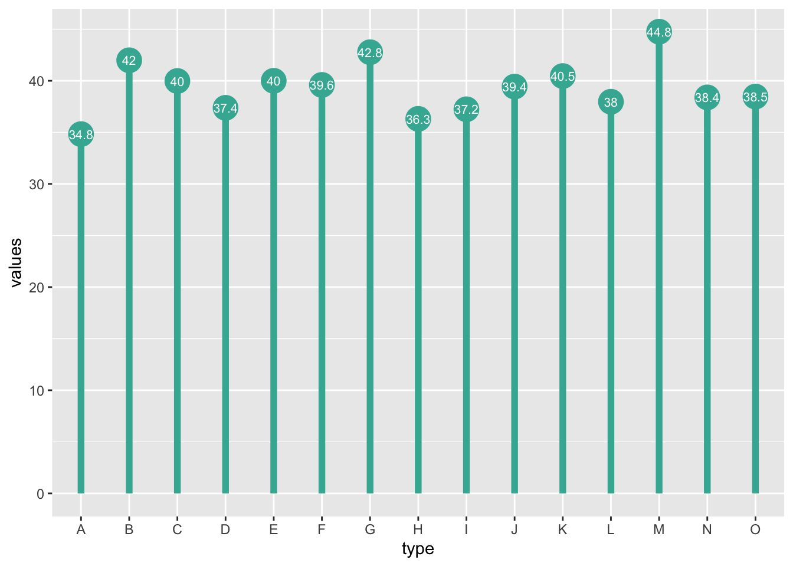
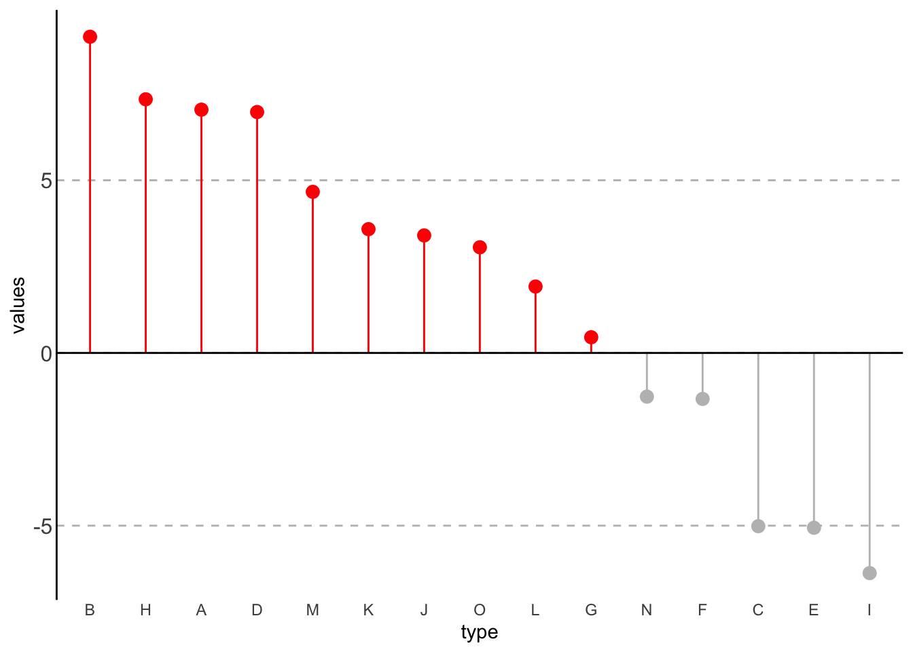

對長條圖感到厭煩？何不試試棒棒糖圖(Lollipop chart)
R
ggplot
簡介棒棒糖圖(Lollipop chart)，告訴你什麼時候可以使用，並用ggplot2繪製它。
我常常繪製統計圖表，常常使用長條圖，但偶爾會對長條圖感到厭煩。所以我試著尋找比較少見，而且能替代長條圖功能的圖形。棒棒糖圖(lollipop chart)是我對長條圖感到厭倦時的解藥。
什麼是棒棒糖圖(Lollipop chart)？
棒棒糖圖與一般常見的長條圖在功能方面是完全一樣的，都是用來比較不同的種類或不同時間點間的數值差異。長條圖通常用「長條」的長度來表示數值的大小，棒棒糖圖則是用線段表示數值大小，並在末端加了一個點，因形似棒棒糖而得名。
跟長條圖一樣存在著不同的變體，例如橫向的圖形：
也可以用來同時比較正數及負數：

有的時候還會看到有人利用末端的圓形放入數值標記：

什麼時候適合使用棒棒糖圖？
適合使用棒棒糖圖的時機，我認為有下列兩個：
太頻繁的使用長條圖的時候
想要降低圖案佔統計圖表之比例的時候
設想今天你寫了一份資料分析報告，裡面需要很多不同類別間的數量比較，長條圖肯定是最直觀的選擇。但如果整份報告向下方圖形一樣，充滿了長條圖，很容易讓讀者感到煩膩並對圖形感到疲勞，降低了我們想要透過圖形傳遞重要資訊的效果。
這時，棒棒糖圖是個可以替代長條圖的選擇。
第二個使用時機是，當你要比較的種類很多，而且數值全部都很接近的時候。因為這時長條的圖案會佔你的整體圖表過多的比例，讓你的圖表變得很厚重：

你可以利用棒棒糖圖可以降低這種感覺，讓圖案的佔比下降：

使用ggplot繪製棒棒糖圖
棒棒糖圖可以利用ggplot2的geom_point和geom_segment來畫，也就是用點和線段來組成棒棒糖的形狀。
# 範例資料
data <- data.frame(
type = LETTERS[1:15],
values = round(abs(rnorm(15, 40, 3)), 2)
)
# 繪製圖形
p <- data |>
ggplot(aes(x = type, y = values)) +
geom_point(size = 7, pch = 19, color = "#41B3A2") +
geom_segment(aes(x = type, xend = type, y = 0, yend = values),
linewidth = 2, color = "#41B3A2")
pgeom_segment是用來畫出線段的，其中x、xend、y、yend指定的是你線段兩端點的座標。
在圓點中標記數值
p <- p + geom_text(aes(label = round(values, 1)),
color = "white", size = 8, size.unit = "pt")
p
geom_text可以用來標記數值的，因為數值的位置和圓點一樣，所以aes()中不再設定x和y。label則是設定要標記的文字。
繪製橫向棒棒糖圖
要繪製橫向棒棒糖圖，可以使用coord_flip()將兩軸翻轉來達成。
p + coord_flip()同時比較正數及負數
data2 <- data.frame(
type = LETTERS[1:15],
values = rnorm(15, 0, 5)
)
data2 |>
mutate(
c = as.factor(if_else(values >= 0, 0, 1))
) |>
ggplot(aes(x = fct_reorder(type, desc(values)),
y = values, color = c)) +
geom_point(size = 3) +
geom_segment(aes(x = type, xend = type, y = 0, yend = values)) +
geom_hline(yintercept = 0) +
scale_color_manual(values = c("red", "grey")) +
labs(x = "type") +
theme(
legend.position = "none",
axis.ticks.length = unit(0, "mm"),
axis.line.y = element_line(),
axis.text.y = element_text(size = 12),
panel.grid.minor = element_blank(),
panel.grid.major.x = element_blank(),
panel.grid.major.y = element_line(color = "grey",
linetype = "dashed"),
panel.background = element_blank()
) 
這張圖比較正負數的圖，比起前面的圖形多做了三件事：
依大小排序。是將
type這個變數依據values的值來設定level，利用fct_reorder(type, desc(values)來達成。將正值及負值加上不同的顏色。
用
mutate()產生一個新變數c標記正負值，再依據其設定不同顏色(aes()中的color = c)。scale_color_manual(values = c("red", "grey"))則是手動設定顏色。
用
geom_hline(yintercept = 0)在0的位置加上水平線，作為比較的基準。
這次的介紹就到這裡，希望能幫到用膩了長條圖的你，謝謝。